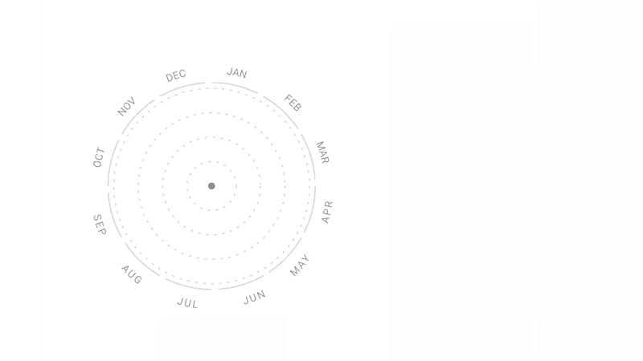
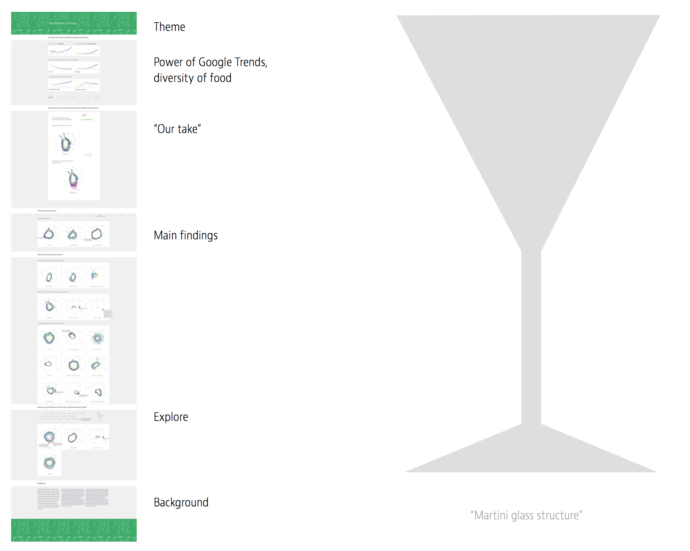
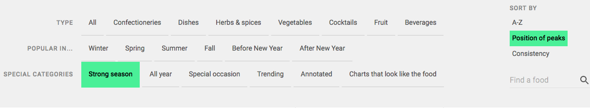
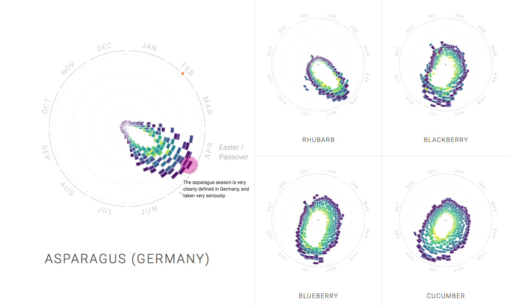

The Rhythm of Food project is an interactive data explorer presented in a single long web page. The website shows findings around the seasonality of food queries — from high-level patterns to lots of small anecdotes — and also lets visitors explore the data themselves to great depth. Overall, it presents more than 130,000 data points on over 200 topics and each chart shows over 600 individual weekly data values.
In order to investigate seasonal patterns in food searches, the project developed a new type of radial “year clock” chart to reveal seasonal trends for food items. Animation has been used to show how the charts can be read.
The chart shows the yearly ebb and flow of search queries for that term, from 2004 to now. Time runs in a circle, with winter months on top and summer on bottom. Each block represents the number of Google researches for a week indicating the search interest. The further away it from the radius, the highest number of Google searches happen. And the color indicates the year. For example, December 2016 has a very high queries happen for APRICOT.
The chart highlights two aspects:
The project displays on a single long web page, following a so-called “Martini glass structure”: provide a wide overview and introduction to the topic first, then narrow down towards a single, narrative path through the key insights, and then open up to free, self-steered exploration.
"Dig into the data, and see for yourself!"
 